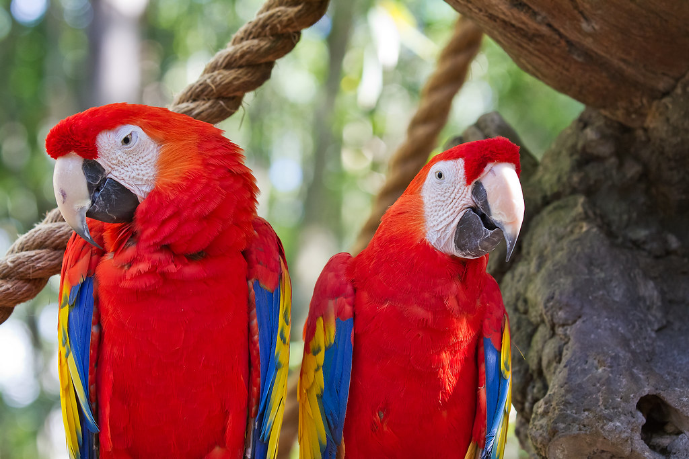

Características da Espécie
Sobre o Arara Escarlate
A arara escarlate é uma das aves mais fotogénicas e reconhecidas no mundo inteiro. Com as suas cores vivas e contrastantes — um vermelho profundo no corpo, amarelo nas coberturas das asas e azul nas rémiges — é muitas vezes considerada o paradigma das aves tropicais. Não é por acaso que é o símbolo nacional da Honduras e aparece nas bandeiras e brasões de vários países centro-americanos.
Nativa das florestas tropicais desde o sul do México até ao Brasil, a arara escarlate habita sobretudo zonas costeiras, manguezais e florestas de altitude média. Em liberdade, é uma ave social que vive em casais permanentes e bandos familiares, voando enormes distâncias diárias em busca de frutos, nozes e sementes.
Em cativeiro, é uma ave de personalidade forte e independente — mais assertiva do que a arara azul e amarela, por exemplo. Requer tutores experientes e consistentes, capazes de estabelecer limites claros e de manter uma rotina de treino por reforço positivo. Em boas mãos, é uma companheira extraordinária e absolutamente fascinante.
A Paraíso de Aves cria araras escarlate no nosso estabelecimento registado em Llíria, Valência, com toda a documentação CITES I exigida pela legislação europeia. Dada a natureza protegida da espécie, a disponibilidade pode ser limitada — contacte-nos com antecedência para verificar a disponibilidade de exemplares.
Temperamento e Inteligência
A arara escarlate tem uma personalidade marcante e, por vezes, desafiante. É inteligente e perspicaz — consegue rapidamente perceber as inconsistências no comportamento do tutor e explorar isso a seu favor. Este traço de carácter torna-a fascinante mas também exigente: requer tutores consistentes e com experiência em aves grandes.
Em contraste com a arara azul e amarela (geralmente mais dócil), a escarlate pode mostrar comportamentos territoriais na fase de maturidade sexual, que se inicia por volta dos 3 a 5 anos. Sessões regulares de treino e socialização desde novo são fundamentais para prevenir comportamentos agressivos no adulto.
Expressividade e Comunicação
A arara escarlate é altamente expressiva. As suas mudanças de humor são evidentes: as penas da cabeça eriçam-se quando está excitada, as pupilas contraem-se rapidamente quando está estimulada ou alerta, e o corpo relaxa completamente quando se sente segura e confortável. Aprender a ler estes sinais é essencial para construir uma relação de confiança.
Alimentação
Em liberdade, a arara escarlate tem uma dieta mais variada e rica em gorduras do que a maioria das araras, incluindo regularmente frutos imaturos e sementes ricas em lípidos que outras espécies evitam devido aos seus taninos.
Alimentação em Cativeiro
- Pellets para araras: 40–50% da dieta, especificamente formulados para araras grandes
- Frutos tropicais: Manga, papaia, banana, maracujá, kiwi
- Frutos silvestres: Romã, mirtilo, framboesa — ricos em antioxidantes
- Nozes: Noz, macadâmia, amendoim, pinhão — importante componente lipídica
- Vegetais: Pimento vermelho (ótimo para vitamina A), milho, cenoura, batata-doce
A escarlate tem uma particular preferência por alimentos duros e resistentes que desafiem o bico. Ofereça nozes com casca, espiga de milho inteira e cenouras cruas para enriquecimento alimentar.
Jaula e Habitat
A arara escarlate, com a sua envergadura de asa que pode atingir os 120 cm, necessita de uma jaula verdadeiramente generosa. As dimensões mínimas recomendadas são de 120 cm × 80 cm × 150 cm, mas um aviário exterior coberto é a solução ideal para Portugal, especialmente nas regiões mais quentes do sul.
A construção deve ser em aço inox ou ferro galvanizado de alta resistência. A arara escarlate tem um dos bicos mais poderosos entre as araras de tamanho médio-grande — jaulas de construção frágil serão deterioradas rapidamente.
Enriquecimento Obrigatório
- Brinquedos de destruição renovados frequentemente (ramos, caixas, palha entrelaçada)
- Puzzle feeders para estimulação cognitiva durante o dia
- Poleiros a diferentes alturas (as araras preferem estar no ponto mais alto do espaço)
- Baloiços e argolas para exercício e acrobacias
Cuidados Diários e Exercício
A arara escarlate necessita de 4 a 5 horas de interacção diária fora da jaula. É uma ave que se entedia facilmente e pode desenvolver comportamentos destrutivos (depenamento, gritos excessivos) quando privada de estimulação.
O treino por reforço positivo é especialmente importante nesta espécie. Invista tempo diário em sessões de treino curtas mas consistentes — o reforço positivo com comida favorita produz resultados excelentes e fortalece o vínculo tutor-ave.
Manutenção da Plumagem
A plumagem vibrante da arara escarlate mantém-se em óptimo estado com banhos regulares (2–3 vezes por semana) e boa nutrição. Uma dieta deficiente manifesta-se rapidamente na qualidade das penas — cores desbotadas ou penas danificadas são geralmente sinal de carências nutricionais.
Saúde e Veterinário
A arara escarlate é geralmente saudável quando bem cuidada, mas tem algumas susceptibilidades específicas:
- Papilomatose viral: Tumores benignos na cavidade oral, cloaca e trato digestivo. Mais frequente em araras do que em outros psitacídeos.
- Proventiculite Dilatante (PDD): Doença viral neurológica que afecta o aparelho digestivo. Progressiva e actualmente sem cura.
- Bacteriémia por picadas: O bico poderoso pode causar infecções graves ao tutor. Nunca subestime uma mordidela de arara — recorra a cuidados médicos se ocorrer uma lesão significativa.
Consultas veterinárias anuais, vacinação e análises de sangue preventivas são fundamentais para detectar precocemente qualquer anomalia de saúde.
Documentação CITES e Legislação em Portugal
A arara escarlate está incluída no Apêndice I da CITES, o nível de protecção mais elevado. Em Portugal, é completamente ilegal possuir uma arara escarlate sem documentação CITES I válida emitida por criador registado junto às autoridades competentes.
Todos os nossos exemplares são criados no estabelecimento registado da Paraíso de Aves em Llíria, Espanha, com autorização das autoridades espanholas de meio ambiente (MITERD). A documentação é válida em toda a União Europeia, incluindo Portugal.
A documentação inclui: certificado CITES I, anilha de identificação fechada, certificado veterinário de saúde e registo do criador. Todos os documentos são entregues em mão no momento da entrega da ave.
Entrega em Portugal e Processo de Reserva
O transporte de araras escarlate para Portugal é efectuado por transportadora especializada em animais vivos, com toda a documentação necessária. A caixa de transporte IATA é escolhida em função do tamanho do animal e cumpre todos os requisitos internacionais de bem-estar animal no transporte.
- Portugal continental: 1 a 3 dias úteis após confirmação
- Madeira e Açores: Transporte aéreo, prazo adicional de 2 a 4 dias
Para reserva, utilize o formulário nesta página ou envie-nos um e-mail. Informamos sobre disponibilidade e detalhes de preço em menos de 24 horas.
Por que Escolher a Paraíso de Aves?
25+ Anos de Experiência
Criador registado desde 1998 com histórico comprovado.
CITES Oficial
Toda a documentação legal CITES incluída no preço.
Criados à Mão
Socializados desde bebés para máxima confiança.
Entrega Segura
Envio certificado para qualquer ponto de Portugal.
Garantia de Saúde
Certificado veterinário e acompanhamento pós-venda.
Apoio Personalizado
Aconselhamento antes e depois da adopção.
Perguntas Frequentes sobre o Arara Escarlate
Espécies Relacionadas
Interessado em Adoptar um Arara Escarlate?
Contacte-nos para verificar disponibilidade e iniciar o processo de reserva. Entregamos em todo Portugal continental, Madeira e Açores.
Solicitar Disponibilidade Enviar E-mail